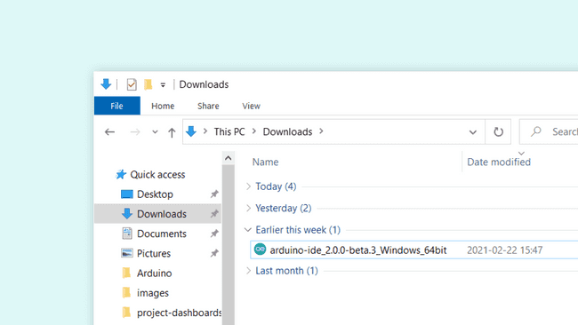
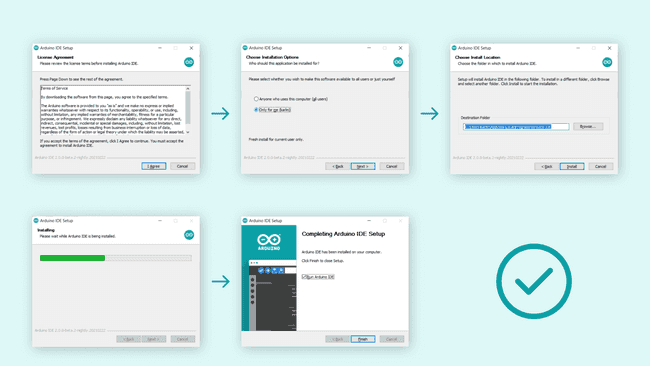
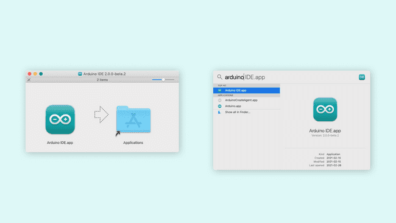
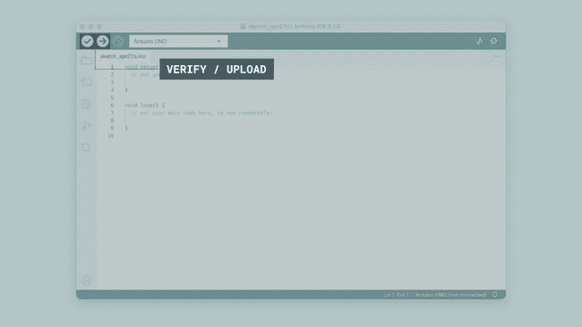
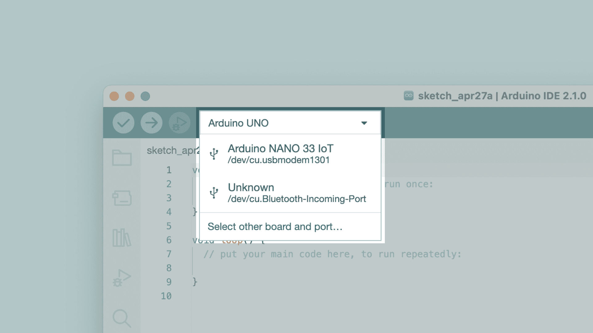
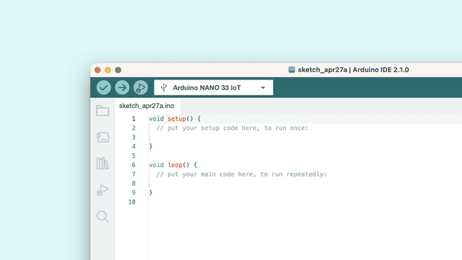
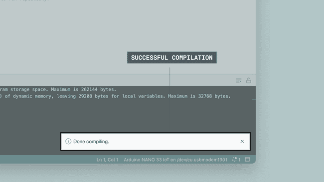
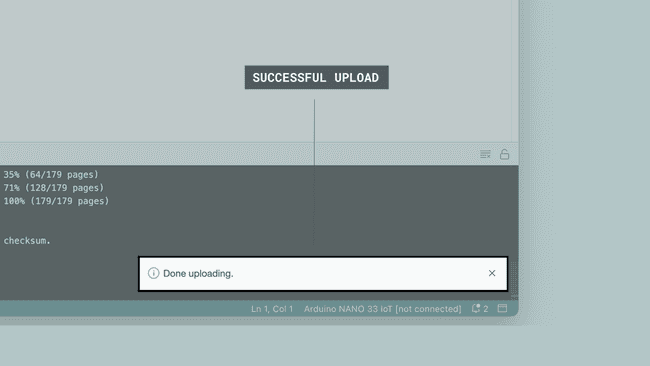
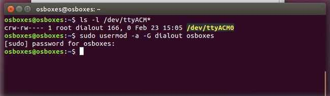

Arduino Lab # 0 - System Verification Test
Author: Steve Ellermann
Overview
In this lesson, you will install the Arduino IDE 2 onto your computer. You will open the provided source code file and upload it to the UNO R3 controller board using a USB 2.0 Type A to USB 2.0 Type B Cable to blink the Arduino's built-in LED.
Requirements:
- Arduino IDE (Arduino IDE 2 was used for this document)
- Arduino UNO R3 or Elegoo UNO R3 Board
- (1) x USB 2.0 Type A to USB 2.0 Type B Cable
Datasheets:
Downloading and installing the Arduino IDE 2
SOURCE:
A quick guide on how to install the IDE 2 on your operating system.
You can easily download the editor from the Arduino Software page.
Requirements
- Windows - Win 10 and newer, 64 bits
- Linux - 64 bits
- Mac OS X - Version 10.14: "Mojave" or newer, 64 bits
The Arduino IDE 2
The Arduino IDE 2 is an open-source project. It is a big step from its sturdy predecessor, Arduino IDE 1.x, and comes with revamped UI, improved board & library manager, debugger, autocomplete feature and much more.
Download the Editor
Downloading the Arduino IDE 2 is done through the Arduino Software page. Here you will also find information on the other editors available to use.
Installation
Windows
To install the Arduino IDE 2 on a Windows computer, simply run the file downloaded from the software page.

Running the installation file.
Follow the instructions in the installation guide. The installation may take several minutes.

Instructions for installing the IDE 2
You can now use the Arduino IDE 2 on your Windows computer!
macOS
To install the Arduino IDE 2 on a macOS computer, simply copy the downloaded file into your application folder.

Installation on macOS.
You can now use the Arduino IDE 2 on your macOS computer!
Linux
To install the Arduino IDE 2 on Linux, first download the AppImage 64 bits (X86-64) from the Arduino Software page.
Before we can launch the editor, we need to first make it an executable file. This is done by:
right-click the file,
choose **Properties**,
select **Permissions** tab,
tick the **Allow executing file as program** box.

You can now double click the file to launch the Arduino IDE 2 on your Linux machine. In case you cannot run the AppImage file, make sure that FUSE is installed on your system.
In Ubuntu (>= 22.04):
sudo add-apt-repository universe
sudo apt install libfuse2
In Fedora
dnf install fuse
See instructions for installing FUSE on your distribution here.
To enable the Arduino IDE to access the serial port and upload code to your board, the following rule can be added to /etc/udev/rules.d/99-arduino.rules.
SUBSYSTEMS=="usb", ATTRS{idVendor}=="2341", GROUP="plugdev", MODE="0666"
Systems Verification Test
Download the Arduino source code file (also known as a sketch) Lab0SystemVerificationTest.ino and save it to your computer.
/*
Lab0SystemVerificationTest.ino
Turns an on-board LED on for 100 milliseconds, then off for 100 milliseconds,
repeatedly.
Most Arduinos have an on-board LED you can control. On the UNO, MEGA and ZERO
it is attached to digital pin 13, on MKR1000 on pin 6. LED_BUILTIN is set to
the correct LED pin independent of which board is used.
If you want to know what pin the on-board LED is connected to on your Arduino
model, check the Technical Specs of your board at:
https://www.arduino.cc/en/Main/Products
modified 21 Feburary 2023
by Steve Ellermann
modified 8 May 2014
by Scott Fitzgerald
modified 2 Sep 2016
by Arturo Guadalupi
modified 8 Sep 2016
by Colby Newman
This code is based on example code in the public domain.
https://www.arduino.cc/en/Tutorial/BuiltInExamples/Blink
*/
// the setup function runs once when you press reset or power the board
void setup() {
// initialize digital pin LED_BUILTIN as an output.
pinMode(LED_BUILTIN, OUTPUT);
}
// the loop function runs over and over again forever
void loop() {
digitalWrite(LED_BUILTIN, HIGH); // turn the LED on (HIGH is the voltage level)
delay(100); // wait for 100 milliseconds
digitalWrite(LED_BUILTIN, LOW); // turn the LED off by making the voltage LOW
delay(500); // wait for 500 milliseconds
}
Principle
The UNO R3 board has rows of connectors along both sides that are used to connect to several electronic devices and plug-in 'shields' that extends its capability.
It also has a single LED that you can control from your sketches. This LED is built onto the UNO R3 board and is often referred to as the 'L' LED as this is how it is labeled on the board.

You may find that your UNO R3 board's 'L' LED already blinks when you connect it to a USB plug. This is because the boards are generally shipped with the 'Blink' sketch pre-installed.
We will reprogram the UNO R3 board with our own Blink sketch and then change the rate at which it blinks.
The time has now come to put that connection to the test and program your UNO R3 board.
Attach your Arduino board to your computer with the USB cable.
Open the file Lab0_SystemVerificationTest.ino that you downloaded with Arduino IDE 2
How to upload a sketch with the Arduino IDE 2
SOURCE:
In the Arduino environment, we write sketches that can be uploaded to Arduino boards. In this tutorial, we will go through how to select a board connected to your computer, and how to upload a sketch to that board, using the Arduino IDE 2.
You can easily download the editor from the Arduino Software page.
You can also follow the downloading and installing the Arduino IDE 2 tutorial for more detailed guide on how to install the editor.
Requirements
- Arduino IDE 2 installed.
Verify vs Upload
There are two main tools when uploading a sketch to a board: verify and upload. The verify tool simply goes through your sketch, checks for errors and compiles it. The upload tool does the same, but when it finishes compiling the code, it also uploads it to the board.
A good practice is to use the verifying tool before attempting to upload anything. This is a quick way of spotting any errors in your code, so you can fix them before actually uploading the code.
Uploading a Sketch
Uploading a sketch is quick and easy, but let's take a look at what we need to do.
-
Open the Arduino IDE 2.
-
With the editor open, let's take a look at the toolbar at the top. At the very left, there is a checkmark and an arrow pointing right. The checkmark is used to verify, and the arrow is used to upload.

Verifying and uploading buttons
- But before doing any of that, we should choose what board we are uploading to. Beside the verify and upload button you should see a a drop down menu, this will, in most cases, display Arduino boards that are connected to your computer. If your board is not automatically detected, you can either press "Select other board and port..." in the drop-down and follow the instructions, or go to Tools > Board and Tools > Port in the toolbar menu to select the board and port manually.

Selecting the board.
So connect your board to the computer and select it from the drop down menu. You'll know that there is a connection to the board when the board name appears in bold.

Selecting the board.
- Click on the verify tool (checkmark). Since we are verifying an empty sketch, we can be sure it is going to compile. After a few seconds, we can see the result of the action in the console (black box in the bottom).

Successful compilation printed in the console.
-
With the board selected, we are good to go! Click on the upload button, and it will start uploading the sketch to the board.
-
When it is finished, a notification pops up in the bottom right of your IDE window. Of course, sometimes there are some complications when uploading, and these errors will be listed here as well.

Successful upload printed in the console.
Congratulations, you have now uploaded a sketch to your Arduino board!
Please Read (Only Linux Users)
It might happen that when you upload a sketch - after you have selected your board and the serial port - you get an error such as "... Permission denied". If you get this error, you need to set serial port permission.
To do this, open your Terminal and type:
ls -l /dev/ttyACM*
you will get something like:
crw-rw---- 1 root dialout 188, 0 5 apr 23.01 ttyACM0
The "0" at the end of ACM might be a different number, or multiple entries might be returned. The data we need is "dialout" (is the group owner of the file).
Now we just need to add our user to the group:
sudo usermod -a -G dialout <username>
where <username> is your Linux user name. You will need to log out and log in again for this change to take effect.

Adding user to the group.
After this procedure, you should be able to proceed normally and upload the sketch to your board or use the Serial Monitor. Results
If you see the Arduino onboard LED blinking (100ms ON, 500ms OFF). Congratulations! Your PC / Arduino have passed the System Verification Test.
Last Updated: 2024-04-25
Copyright © 2023 - 2024. Content (including text, graphics, artwork, audio, video, documents, and other media formats) available on this website are for educational purposes only and are properties of their respective owners. The use of these names, logos and brands does not imply endorsement.